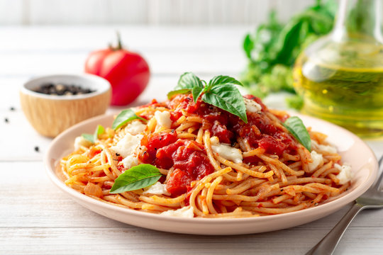
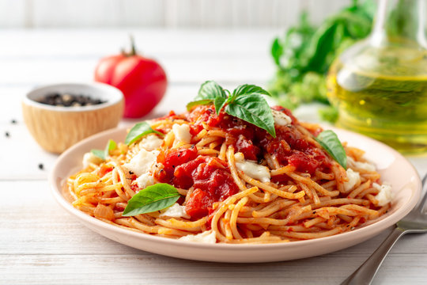

Budget Pasta
A simple, affordable pasta dish made with minimal ingredients — perfect for students or families on a budget.
 


Ingredients
- 200g pasta (any type)
- 2 tbsp olive oil
- 2 cloves garlic, minced
- 1 can diced tomatoes
- Salt and pepper to taste
- Optional: grated cheese or herbs
Instructions
- Boil pasta according to package instructions. Drain and set aside.
- Heat olive oil in a pan and sauté garlic until golden.
- Add canned tomatoes, salt, and pepper. Simmer for 10 minutes.
- Mix in the pasta and stir well until coated with sauce.
- Serve hot with optional cheese or herbs on top.